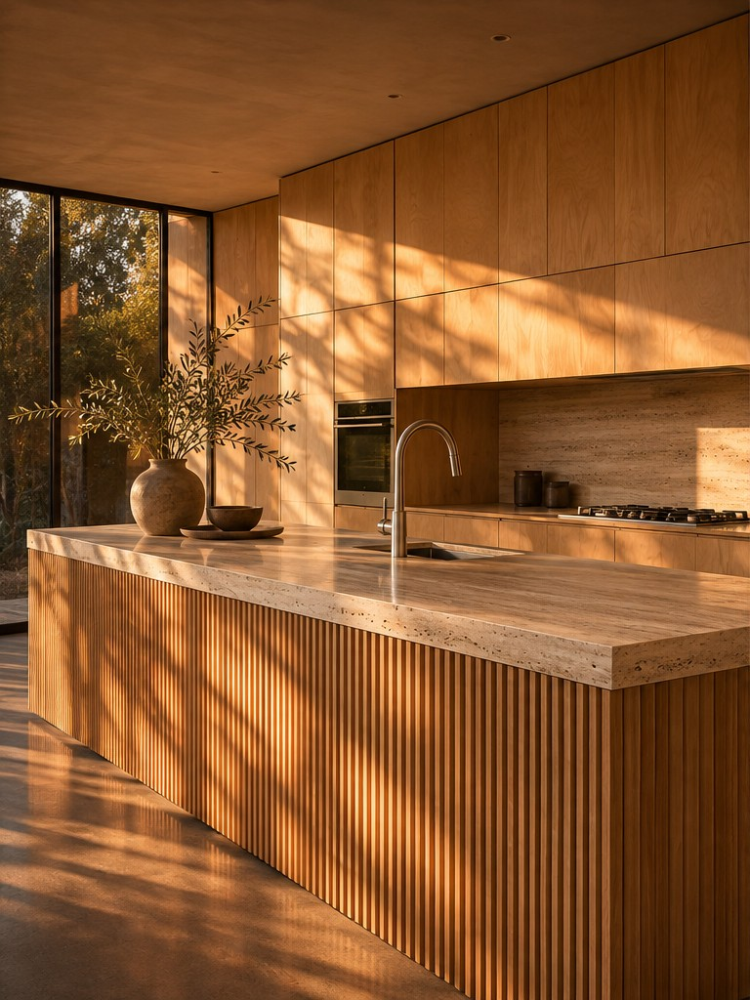
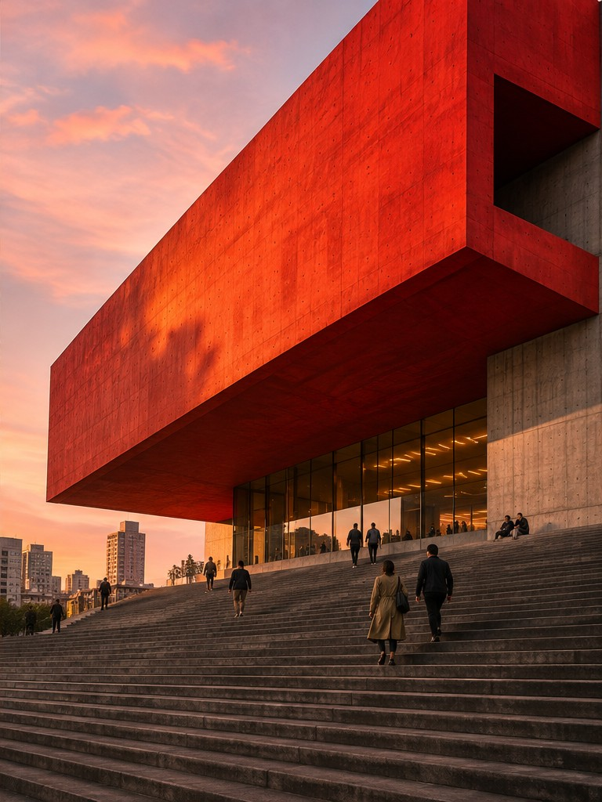

На сайт
Из поста о кухне на заказ человек переходит к расчёту стоимости. Обращение фиксируем в Метрике и сверяем с CRM.
A—01 / Рупор
Сообщение появляется в канале. Кто-то пролистывает его, кто-то открывает сайт. Мы разложили этот короткий путь на три работающих механизма.
A—02 / Коммутатор
AiR × MAX
В каналах MAX показывается короткое объявление с изображением и ссылкой. Яндекс Директ или VK Реклама подбирает аудиторию по настройкам кампании.
Публикация появляется между обычными записями. Яндекс Директ автоматически подбирает каналы, оплата идёт за клики.
AiR вручную отбирает каналы по теме, региону, просмотрам и цене. Согласуем текст с площадкой и проверяем выход публикации.
Объявление в Поиске Яндекса или РСЯ приводит человека в MAX. На входе его встречает канал с оформленной лентой и закреплённым постом.

Из поста о кухне на заказ человек переходит к расчёту стоимости. Обращение фиксируем в Метрике и сверяем с CRM.

Из городской афиши читатель переходит к подборке событий. Вступления считаем по отдельной ссылке или в кабинете, когда доступен учёт.
A—03 / Счётчик
AiR × MAX
Иллюстративные расчёты
Из 30 000 ₽ на размещение одна заявка обошлась в 2 000 ₽. Менеджер подтвердил 8 целевых обращений.
Условные данные. Стоимость результата рассчитана по медиабюджету. Работа AiR учитывается отдельно.
Из каталога выставки
На подготовку уходит 5–7 рабочих дней после получения материалов. Проверяем посадочную страницу или канал, согласуем медиаплан и собираем до трёх креативов. Тест идёт 14–21 день с первого размещения.
Раз в неделю отправляем сводку. По каждому размещению показываем расходы, показы, клики и стоимость результата. Для сайта сверяем качество заявок с CRM. Для канала отдельно указываем переходы и подтверждённые вступления.
Налоги и комиссии площадок уточняем в смете до размещения.
Расскажите о продукте и аудитории, пришлите ссылку на сайт или канал, материалы и реквизиты рекламодателя. Для заявок нужен доступ к аналитике, для подписок — к статистике канала.